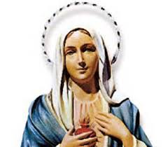
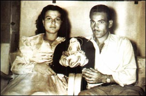
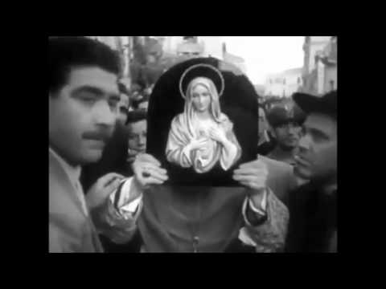
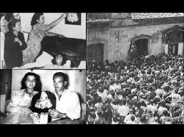

“UM CASAL CRISTÃO”
O BOM INÍCIO 
Ângelo Iannuso e Antonina Lucia Giusto eram dois jovens idealistas, dedicados ao trabalho que cultivavam com esforço e competência, e também, que exercitavam o santo ideal de construir uma família verdadeiramente cristã conforme o projeto Divino. Rezavam e frequentavam a Igreja, sempre suplicando o precioso auxílio e a sabedoria necessária ao SENHOR DEUS e a SANTÍSSIMA VIRGEM MARIA, para que iluminassem as suas decisões, objetivando concretizar os seus ideais, protegendo-os contra as tramas do maligno.
O imenso amor que exercitavam, uniu-os definitivamente com todas as forças e energias num belo matrimônio. Eles se casaram no dia 21 de Março de 1953. Assim, revigorados pelo empenho da boa união, juntos enfrentaram as dificuldades de todos os começos, edificando uma sólida existência conjugal. O casal estabeleceu moradia numa modesta casa na Via degli Orti di San Giorgio, na cidade de Siracusa, uma bela e simpática cidade portuária situada ao sul da Sicilia, na Itália. Todavia o bairro não tinha uma boa fama, pois nele existiam muitos grupos de pessoas ligadas ao nefasto Partido Comunista Italiano, que sempre buscavam impor as suas idéias para alcançar os seus objetivos.
PROBLEMAS NA SAÚDE DA ESPOSA
O casal não cultivava relações de amizade com aqueles exaltados, pois estavam sempre preocupados em realizar o sonhado projeto da vida. Viviam do trabalho, das boas amizades, e o carinho dos pais e parentes, totalmente concentrados nos seus interesses. E assim, tudo caminhava normalmente e eles viviam felizes na vida conjugal.
Como fato natural da existência humana, Ângelo e Antonina logo encomendaram o primeiro filho. Todavia em razão da sua constituição física, talvez Antonina necessitasse anteriormente de um preparo ou de algum ajuste orgânico para o viver matrimonial. Esta realidade logo apareceu em consequência do surgimento de problemas com a sua saúde. Antonina passou a viver com tristes e desagradáveis acontecimentos, justamente no período da sua gravidez. E à medida que passavam os meses, o seu estado de saúde se complicava em face do surgimento de sérios distúrbios neurológicos, que passaram a interferir na própria gravidez. E justamente para agravar o problema, Antonina já estava no sexto mês, o que sem duvida poderia criar uma situação difícil para a vida da criança em pleno desenvolvimento no útero materno.
OS PAIS VIERAM AJUDAR
No dia 23 de março do ano de 1953, as crises se multiplicaram, causando preocupação a todos. E assim, os pais de Antonina vieram lhes fazer companhia, para ajudá-los naquela terrível dificuldade, inclusive para permitir que também o esposo Ângelo pudesse trabalhar.
Os sintomas apresentados pela paciente eram crises convulsivas, perda da palavra, da capacidade visual e também da própria consciência. Um quadro patológico peculiar, que iria levantar muitas suspeitas e tornar ainda mais surpreendente e maravilhoso o que veio a ocorrer naquele dia 29 de agosto de 1953. Nesse dia, como habitualmente, Ângelo depois de ajudá-la com as providências matinais, saiu para o trabalho, deixando a sua esposa deitada, não sentindo nenhuma dificuldade naquele momento.

Entretanto, algum tempo depois que o marido saiu, surgiu uma daquelas abomináveis crises. Eram 8h30 da manhã e Antonina se sentindo ofegante tentava alguma providência, quando numa fração de segundos os seus olhos foi atingido por uma luz fulgurante, induzindo-a olhar para aquele quadro com imagem de gesso de NOSSA SENHORA, um quadro em revelo do IMACULADO CORAÇÃO DE MARIA que lhe haviam presenteado no seu casamento, e que estava pendurado na parede, à cabeceira da sua cama. Cheia de emoção, viu brotar dos olhos da imagem da SANTÍSSIMA VIRGEM, duas grossas lágrimas, que desceram vagarosamente pela face e logo, eram seguidas por mais duas outras e de outras mais, que foram descendo pela bela face da imagem da SANTA MÃE...
LÁGRIMAS DA MÃE DE DEUS

De início, entre a surpresa e o susto por aquele fato inusitado, a jovem gestante imaginou estar tendo alguma alucinação, decorrente do estado da sua enfermidade. Porém, ao constatar que as lágrimas escorriam sem interrupção e não tendo forças para se levantar, chamou aos gritos pelos seus familiares: “Papai, Mamãe, venham ver o quadro de NOSSA SENHORA que está chorando!”. Eles vieram rapidamente e puderam constatar a realidade: “verdadeiramente a imagem da VIRGEM estava em prantos” e, diante daquele admirável fenômeno, eles amorosamente comovidos, também se puseram a chorar…
A notícia se espalhou rapidamente na rua em que residiam e se alastrou de maneira continua e veloz, através do Bairro, atraindo uma impressionante multidão onde se misturavam curiosos e fiéis, que se aglomeraram diante da residência do casal para constatar, e presenciar com os próprios olhos, aquele sobrenatural acontecimento. E para maior alegria de muitos que inclusive, tiveram a oportunidade de adentrar na residência, e puderam verificar “in loco”, que as lagrimas desciam num fluxo permanente, eles se apressaram e posicionando próximo a imagem, conseguiram colher algumas gotas no lenço e em porções de algodão, alcançando as primeiras relíquias daquela maravilhosa e singular manifestação Divina.
IMAGEM PARA TODOS APRECIAREM

O pároco Don Giuseppe Bruno, com a permissão da Cúria Romana, submeteu o fenômeno a uma comissão médica, presidida pelo Dr. Michele Cassola. A comissão foi à residência do casal no dia 1 de setembro e colheram aproximadamente um centímetro cúbico do líquido, que fluía dos olhos da imagem da SANTÍSSIMA VIRGEM MARIA. O referido líquido foi submetido à análise microscópica no laboratório especializado, revelando vestígios de proteínas e uratos (designação comum dos sais e ésteres do ácido úrico), mesmas substâncias que são encontradas nas lágrimas das pessoas. Após minucioso exame, o líquido foi classificado como "lágrimas humanas", e o fenômeno declarado cientificamente como inexplicável.
O acontecimento logo chegou ao conhecimento das autoridades, que logo se movimentaram, organizando o povo, orientando o trânsito, enfim, colaborando para que a manifestação Divina fosse acolhida respeitosamente por todos. Inclusive para testar a veracidade dos fatos, mais três Laboratórios especializados, com autorização oficial, colheram as lágrimas da imagem da VIRGEM MARIA e profissionalmente prepararam os seus laudos, comprovando tratar-se de “lágrimas humanas”.
Por outro lado, analisando o equilibrado comportamento social do povo, o Professor Giuseppe Marino, neuro-psiquiatra de fama internacional e especialista em patologias nervosas, declarou: “As alucinações podiam acontecer, diante da realidade concreta das fluentes lágrimas da imagem, que como ficou demonstrado posteriormente nos diversos laboratórios de análises clínicas, se tratava de lágrimas humanas. Todavia, algo muito forte atuou no sentimento do povo, que respeitosamente, sem exageros e sem gritarias, acolheram amorosamente a manifestação da MÃE DE DEUS”.